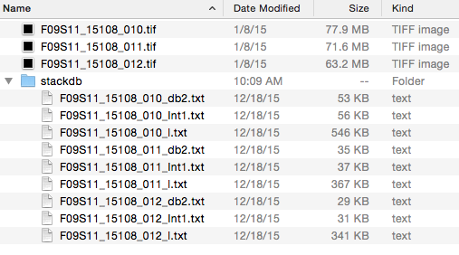
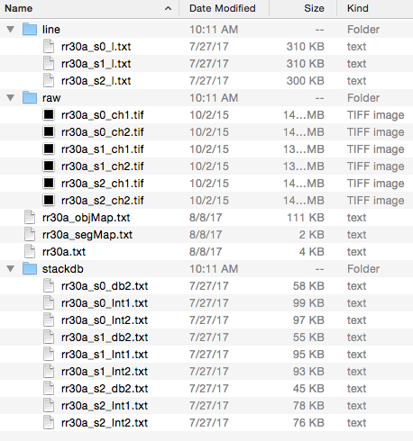

File format
Reading Map Manager files in other programming environments
Map Manager saves all stack and time-series map files as plain text files. In this way, annotations created in Map Manager can easily be opened in a wide range of other programming environments for additional visualization and analysis.
Map Manager - Matlab
add description
PyMapManager
We provide a Python package, PyMapManager, to do this. Please have a look at this package as a starting point for custom analysis and visualization using existing Map Manager files.
- PyMapManager on GitHub
- PyMapManager API documentation
- IPython notebook examples
If you are on a Mac, python comes pre-installed and you are good to go. In general, Anaconda is a useful starting point as it pre-installes most Python packages you might need. Download Anaconda here.
Map Manager file format
For the intrepid data scientist (e.g. data analyst) we are providing the details of the Map Manager file format for both single time-points and maps.

Single time-point files
- The original .tif file is never modified
- Annotations are saved in a stackdb folder
- _db2.txt : Table of annotation values, one line per annotation
- _Int1.txt : Table of intensity analysis for channel 1, one line per annotation
- _Int2.txt :
- _Int3.txt :
- _l.txt : Table of line segment fits

Map files
- Maps are saved in a folder whose name is the same as the map name
- At the root of this folder are three map files
- mapname.txt : See format below
- _objMap.txt :
- _segMap.txt : Segment map (if there are segment)
- There are some folders
- line : Contains tabular data of line tracing, one file per timepoint
- raw: The original .tif files are never modified, these are direct copies.
- stackdb : Same format as for ‘Single time-point files’
HDF5
We are working on saving Map Manager files in the HDF5 format. HDF5 is an open source cross platform binary file format. It can be read from Matlab, Python, Igor Pro and from a command line.
Out of the box, Map Manager is not saving files in the HDF5 format. If you are interested in turning on this feature, please email Robert Cudmore.
Each mapname.txt file has the following format
Map file format
| index | 0 | 1 | 2 | 3 | 4 | 5 | 6 | 7 | 8 |
|---|---|---|---|---|---|---|---|---|---|
| hsType | mm3 | mm3 | mm3 | mm3 | mm3 | mm3 | mm3 | mm3 | mm3 |
| hsStack | rr30a_s0 | rr30a_s1 | rr30a_s2 | rr30a_s3 | rr30a_s4 | rr30a_s5 | rr30a_s6 | rr30a_s7 | rr30a_s8 |
| hsdb | rr30a_s0_db2 | rr30a_s1_db2 | rr30a_s2_db2 | rr30a_s3_db2 | rr30a_s4_db2 | rr30a_s5_db2 | rr30a_s6_db2 | rr30a_s7_db2 | rr30a_s8_db2 |
| hsStackNV | rr30a_s0 | rr30a_s1 | rr30a_s2 | rr30a_s3 | rr30a_s4 | rr30a_s5 | rr30a_s6 | rr30a_s7 | rr30a_s8 |
| date | 20141009 | 20141013 | 20141016 | 20141017 | 20141018 | 20141020 | 20141021 | 20141022 | 20141029 |
| time | 20:01:40 | 22:24:04 | 19:49:05 | 20:30:39 | 16:18:59 | 19:25:41 | 18:36:19 | 19:47:00 | 19:05:27 |
| hsStackSeconds | 3495729700 | 3496083844 | 3496333745 | 3496422639 | 3496493939 | 3496677941 | 3496761379 | 3496852020 | 3497454327 |
| fiducPnt | 0 | 0 | 0 | 0 | 0 | 0 | 0 | 0 | 0 |
| numChannels | 2 | 2 | 2 | 2 | 2 | 2 | 2 | 2 | 2 |
| defaultChannel | 2 | 2 | 2 | 2 | 2 | 2 | 2 | 2 | 2 |
| px | 1024 | 1024 | 1024 | 1024 | 1024 | 1024 | 1024 | 1024 | 1024 |
| py | 1024 | 1024 | 1024 | 1024 | 1024 | 1024 | 1024 | 1024 | 1024 |
| pz | 70 | 65 | 70 | 70 | 70 | 80 | 70 | 80 | 70 |
| dx | 0.12 | 0.12 | 0.12 | 0.12 | 0.12 | 0.12 | 0.12 | 0.12 | 0.12 |
| dy | 0.12 | 0.12 | 0.12 | 0.12 | 0.12 | 0.12 | 0.12 | 0.12 | 0.12 |
| dz | 1 | 1 | 1 | 1 | 1 | 1 | 1 | 1 | 1 |
| stackdbVersion | 20151224 | ||||||||
| numSeg | 5 | ||||||||
| numObj | 2467 | ||||||||
| numSpine | 1227 | ||||||||
| importedStackName | RR30a_S0 | RR30a_S1 | RR30a_S2 | RR30a_S3 | RR30a_S4 | RR30a_S5 | RR30a_S6 | RR30a_S7 | RR30a_S8 |
| condStr | a1 | a2 | e | b1 | b2 | b | c1 | c2 | c3 |
| zeroSession | 0 | ||||||||
| sessions | 0 | 1 | 2 | 3 | 4 | 5 | 6 | 7 | 8 |
| datetime | 3495729700 | 3496083844 | 3496333745 | 3496422639 | 3496493939 | 3496677941 | 3496761379 | 3496852020 | 3497454327 |
| days | 0 | 4.0989 | 6.9913 | 8.0201 | 8.8454 | 10.975 | 11.941 | 12.99 | 19.961 |
| hours | 0 | 98.373 | 167.79 | 192.48 | 212.29 | 263.4 | 286.58 | 311.76 | 479.06 |
| zsessions | 0 | 1 | 2 | 3 | 4 | 5 | 6 | 7 | 8 |
| zdays | 0 | 4.0989 | 6.9913 | 8.0201 | 8.8454 | 10.975 | 11.941 | 12.99 | 19.961 |
| zhours | 0 | 98.373 | 167.79 | 192.48 | 212.29 | 263.4 | 286.58 | 311.76 | 479.06 |
| mapCond | mc1 |